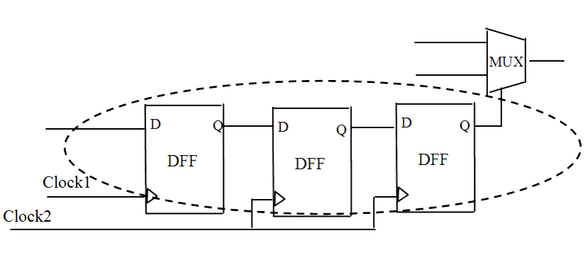

| Description | This rule fires when Leda detects a control signal crossing clock domains. Such control signals can adversely affect the performance of scan insertion and timing analysis. You can activate this rule to double check such signals and avoid data failures caused by clock skew. |
| Policy | DESIGN |
| Ruleset | CLOCKS |
| Language | VHDL/Verilog |
| Type | Hardware |
| Severity | Note |
This is an example of invalid Verilog code, followed by a circuit diagram that illustrates the problem:
module ntl_clk25_top; ... reg Ctrl_01, Ctrl_02, Ctrl_03; wire Ctrl, net_04, net_05, net_06; wire Ctrl; // NTL_CLK25 fires - control signal crossing Clock_1 and Clock_2 domains //DFF -- flip-flop DFFR U0(.D(Ctrl), .CP(Clock_1), .Q(Ctrl_01); DFFR U1(.D(Ctrl_01), .CP(Clock_2), .Q(Ctrl_02); DFFR U3(.D(Ctrl_02), .CP(Clock_2), .Q(Ctrl_03); assign net_06 = Ctrl_03 ? net_04 : net_05; ... endmodule